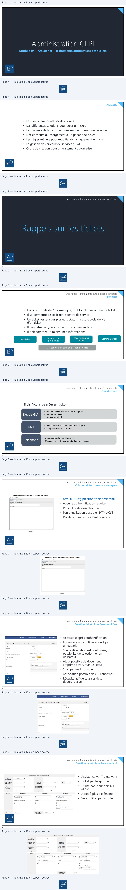
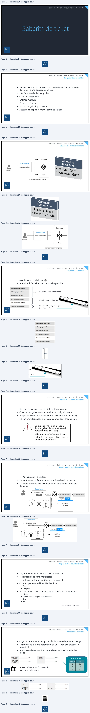
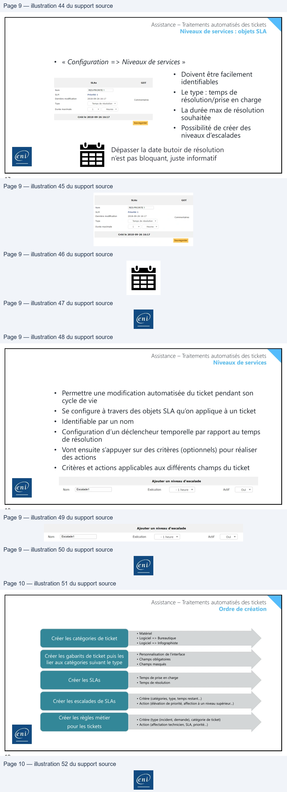

Transcription du document du Drive TSSR. La mise en forme est adaptée au Web ; les compléments IA du portail sont présentés séparément.
Module 04 – Assistance – Traitements automatisés des tickets
1
Objectifs
• Le suivi opérationnel par des tickets
• Les différentes solutions pour créer un ticket
• Les gabarits de ticket : personnalisation du masque de saisie
• Déclencheurs du chargement d’un gabarit de ticket
• Les règles métiers pour modifier dynamiquement un ticket
• La gestion des niveaux de services (SLA)
• Ordre de création pour un traitement automatisé
2
N
Assistance – Traitements automatisés des tickets
3
Assistance – Traitements automatisés des tickets
Le ticket
• Dans le monde de l’informatique, tout fonctionne à base de ticket
• Il va permettre de solliciter le centre de service
• Un ticket passera par plusieurs statuts : c’est le cycle de vie
d’un ticket
• Il peut être de type « incident » ou « demande »
• Il doit compter un minimum d’informations
Répartition des
Traçabilité
Détection des
tâches
Communication
problèmes
Utilisation d’un outil de gestion de ticket
4
A
End
WO
OR HE
Assistance – Traitements automatisés des tickets
Flux d'entrée
Trois façons de créer un ticket
• Interface d’ouverture de tickets anonymes
• Interface simplifiée
• Interface standard
Depuis GLPI
• Envoi d’un mail dans une boîte mail support
• Configuration d’un collecteur
Mail
• Création du ticket par téléphone
• Utilisation de l’interface standard par le technicien
Téléphone
5
Assistance – Traitements automatisés des tickets
Création ticket : interface anonyme
• http(s)://<@glpi>/front/helpdesk.html
• Aucune authentification requise
• Possibilité de désactivation
• Personnalisation possible : HTML/CSS
• Par défaut, rattaché à l’entité racine
6
ent
Formulaire de signalement au support technique
Meyer
=
Des votre problame:
Envoyer
ene
Assistance – Traitements automatisés des tickets
Création ticket : interface simplifiée
• Accessible après authentification
• Formulaire à compléter et géré par
un gabarit
• Si une délégation est configurée,
possibilité de sélectionner un
utilisateur
• Ajout possible de document
(imprime écran, manuel, etc.)
• Suivi par mail possible
• Association possible des CI concernés
• Récapitulatif de tous ses tickets
depuis l’accueil
7
Assistance – Traitements automatisés des tickets
Création ticket : interface standard
• Assistance => Tickets =>
• Ticket par téléphone
• Utilisé par le support N1
et N2
• Accès à plus d’éléments
• Vu en détail par la suite
8
Accueil
Créerunticket
Tickets
Réservations
Description de La demande ou de l'incident
(or
Te
tnedent
+
ew
rie
a
5
Sum par courriel
=
mie
Le ticket sera ajouté dans l'entité GOT
+
Date
07
donee
etter
th
Temps de prise
ts
Temps de
"
Di
en charge
=
résolution
Stas
Temps interne
r
Temps interne
t
Ca)
de résolution
compte
Type
Incident
=
Catégorie
~
40
Acteur
Demandeur
Observateur
Attribué à
8
ruiyhoser
ri
à
vf)
T
“ls
+ (En cours: 0)
+
+ (En cours: 1)
Cour |Hu @gtica
Court
Courriel: |Huy Gate
0
oi
Nouveau
+
Source dela | eipdesk
+ | à
Statut
o
TE
sde
+ |
10
ene

Assistance – Traitements automatisés des tickets
9
Assistance – Traitements automatisés des tickets
Le gabarit : généralités
• Personnalisation de l’interface de saisie d’un ticket en fonction
du type et d’une catégorie de ticket
• Interface standard et simplifiée
• Champs obligatoires
• Champs masqués
• Champs prédéfinis
• Notion de gabarit par défaut
• Accessibles depuis le menu listant les tickets
10
A
Assistance – Traitements automatisés des tickets
Le gabarit : fonctionnement
11
Assistance – Traitements automatisés des tickets
Le gabarit : création
• Assistance => Tickets =>
• Attention à l’entité active : récursivité possible
• Personnalisation visuelle
• Rendu côté utilisateur
• Liaison avec catégorie / type
• Depuis la catégorie
12
Catégorie —
=
le
Saisie ticket
.
————_ Gabarit par défaut
(©)
A |
.
=
Do rdent : Gab1
.
emande : Gaba
Chargement nouveau gabarit
=
Champs obligatoires
Champs prédéfinis
Chi
é
amps masqués
r—
Interface standard
ane
mn,>
Interface simplifiée
ae
Catégories de ticket
+
—
Assistance – Traitements automatisés des tickets
Le gabarit : bonnes pratiques
• On commence par créer ses différentes catégories
• Création des gabarits nommés ainsi : « catégorie-type »
• Jusqu’à deux gabarits par catégorie (incidents et demandes)
• Liaison entre les gabarits et les catégories pour chaque type
• On évite au maximum d’inclure
dans le gabarit le paramétrage du
ticket (priorité, SLA, etc.)
• Gabarit uniquement pour le visuel
• Utilisation de règles métier pour la
configuration du ticket
13
Assistance – Traitements automatisés des tickets
Règles métier pour les tickets
• « Administration => règles »
• Permettre une configuration automatisée des tickets saisis
• Maintenance simplifiée : configuration centralisée au travers
de règles
14
eni BE
@
Gabarit par défaut
Regles
aa
enviOr { Modification ticket —>( Base de données!
Utilisateur
=
Régle| [zl
PS
a
&
5
<
=
=
a
3
&
2
Critères
:
©
3
Actions
ene
a
3
Assistance – Traitements automatisés des tickets
Règles métier pour les tickets
• Règles uniquement lues à la création du ticket
• Toutes les règles sont interprétées
• Importance de l’ordre => Champs concurrent
• Critères : permettre d’identifier les tickets *
• Type
• Catégorie
• Actions : définir des champs hors de portée de l’utilisateur *
• Priorité
• Techniciens / groupes de techniciens
• SLA
• etc.
* Donnés à titre d’exemples
15
Assistance – Traitements automatisés des tickets
Niveaux de services
• Objectif : attribuer un temps de résolution ou de prise en charge
• Saisie manuelle d’une date/heure ou utilisation des objets SLA
sous GLPI
• Attribution des objets SLA manuelle ou automatique via des
règles
Sélection d’un SLA
Priorité
SLA
1
2h
2
8h
3
2j
Calcul effectué en fonction du
calendrier de travail
16
End
Temps de prise
Temps de
ea
en charge
fo
résolution
Bo
Temps interne
de prise en
te
ems tere
to
compte
pu
eni

Assistance – Traitements automatisés des tickets
Niveaux de services : objets SLA
• « Configuration => Niveaux de services »
• Doivent être facilement
identifiables
• Le type : temps de
résolution/prise en charge
• La durée max de résolution
souhaitée
• Possibilité de créer des
niveaux d’escalades
Dépasser la date butoir de résolution
n’est pas bloquant, juste informatif
17
Assistance – Traitements automatisés des tickets
Niveaux de services
• Permettre une modification automatisée du ticket pendant son
cycle de vie
• Se configure à travers des objets SLA qu’on applique à un ticket
• Identifiable par un nom
• Configuration d’un déclencheur temporelle par rapport au temps
de résolution
• Vont ensuite s’appuyer sur des critères (optionnels) pour réaliser
des actions
• Critères et actions applicables aux différents champs du ticket
18
Stas
or
Nom
RES-PRIORITE
1
sun
Priorité
1
créé le 2018-09-26 16:17
Sauvegarder
EA
Ajouter un niveau d'escalade
ene
Nom
Escalade
Exécution
1heure
¥
Actif
Oui
¥
Assistance – Traitements automatisés des tickets
Ordre de création
• Matériel
• Logiciel => Bureautique
• Logiciel => Infographiste
Créer les catégories de ticket
lier aux catégories suivant le type
• Personnalisation de l’interface
• Champs obligatoires
• Champs masqués
Créer les gabarits de ticket puis les
• Temps de prise en charge
• Temps de résolution
Créer les SLAs
• Critère (catégories, type, temps restant…)
• Action (élévation de priorité, affection à un niveau supérieur…)
Créer les escalades de SLAs
• Critère (type (incident, demande), catégorie de ticket)
• Action (affectation technicien, SLA, priorité…)
Créer les règles métier
pour les tickets
19
Assistance – Traitements automatisés des tickets
Ordre de création
• Matériel
Créer les catégories de ticket • Logiciel => Bureautique
• Logiciel => Infographiste
Créer les gabarits de ticket puis les • Personnalisation de l’interface • Champs obligatoires
lier aux catégories suivant le type • Champs masqués
Créer les SLAs •• TempsTemps dede résolutionprise en charge
Créer les escalades de SLAs •• CritèreAction (élévation(catégories,detype,priorité,tempsaffectionrestant…)à un niveau supérieur…)
Créer les règles métier • Critère (type (incident, demande), catégorie de ticket)
pour les tickets • Action (affectation technicien, SLA, priorité…)
19—
